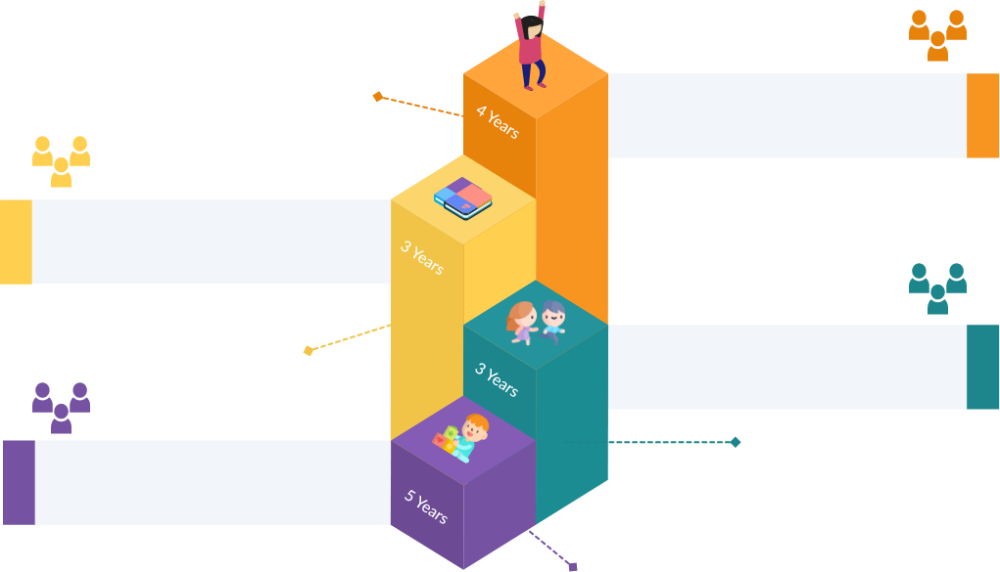

Pedagogical structure and the curriculum framework

Grades 9 to 12
(Age 14-18)
(Age 14-18)
Grades 6 to 8
(Age 11-14)
(Age 11-14)
Anganwadi/
Pre-School/
Balvatika,
Grades 1 & 2
Age 3-8
Pre-School/
Balvatika,
Grades 1 & 2
Age 3-8
Grades 3 to 5
(Age 8-11)
(Age 8-11)
Middle Stage
Conceptual & experimental learning in the Science,
Math, Arts, Social Sciences & Humanities
Foundational Stage
Play/activity-based learning
Secondary Stage
Multidisciplinary study, flexibility and student choice of subjects
Preparatory Stage
Play, discovery and activity-based learning
 Grades 9 to 12 (Age 14-18)
Grades 9 to 12 (Age 14-18)
Secondary Stage
Multidisciplinary study, flexibility and student choice of subjects
4
 Grades 6 to 8 (Age 11-14)
Grades 6 to 8 (Age 11-14)
Middle Stage
Conceptual & experiential learning in the Science, Math, Arts, Social Sciences & Humanities
3
 Grades 3 to 5 (Age 8-11)
Grades 3 to 5 (Age 8-11)
Preparatory Stage
Play, discovery and activity-based learning
2
 Anganwadi/Pre-School/Balvatika,Grades 1 & 2
(Age 3-8)
Anganwadi/Pre-School/Balvatika,Grades 1 & 2
(Age 3-8)
1
Foundational Stage
Play/activity-based learning